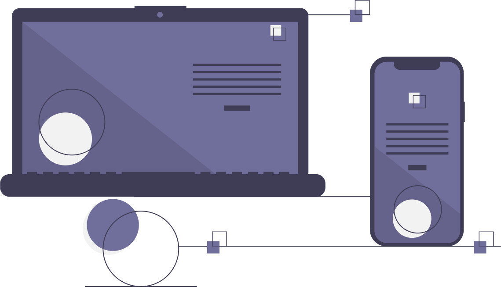

Modern React With Redux

HTML5: cabeçalhos, listas, imagens, links, tabelas, formulários, hear, nav, footer, article, section aside.
CSS3 Intermediário: seletores, div & span, cores, modelo caixa, elementos flutuantes, posicionamento, formatando links.
CSS3 avançado: herança, especifidade, barra navegação vertical e horizontal, abas, layouts líquidos, largura fixa, parallax, fontes customizadas.
Recursos especiais: normalize css, cantos arredondados, degradês, sombras, animações, transições, flexbox.
Bootstrap: responsivo, textos, alinhamentos, cores, media query, botões, barra navegação, listas, inputs, alertas, tabelas, cards, grids, flexbox.
Javascript: variáveis, array, condicionais, operadores de comparação, operadores lógicos, funções, eventos, DOM, loops, BOM.
ES6: var e let, orientação a objetos, literais, prototype, web storage, funções de array.
PHP7: variáveis, arrays, condicionais, operadores de comparação, operadores lógicos, funções, orientação a objetos, abstração, herança, polimorfismo, encapsulamento, interfaces.
Banco de Dados MySQL: estrutura de tabelas, insert, update, select, delete, filtros, operadores de comparação, operadores lógicos, between, in, like, ordenação, agregação, relacionamentos, inner join, left join, right join, alias.
Ajax: requisições síncronas, requisições assíncronas, XMLHttpRequest, estados da requisição, status, notação XML, notação JSON.
PHP com PDO e MySQL: conexão com banco, executando instruções SQL, fetch, fetch all, foreach, SQL injection.
Publicação de aplicações Web na Internet: DNS, hospedagem, cPainel, FTP, configuração do PHP e MySQL.
jQuery: selecionando e manipulando elementos HTML, navegando entre elementos, manipulando CSS, eventos de teclado, eventos de mouse, eventos de formulário, animações, ajax com jQuery.
MVC com PHP: composer, controlador, rota, modelo, visão, abstração, reutilizando layout, conexão com banco de dados.
Projeto Twitter clone: registro e autenticação de usuários, criando timeline, pesquisando usuários, exibindo tweets, seguindo e deixando de seguir, paginação.
API com framework Slim: requisições, rotas, dependências, middleware, respostas, banco de dados, criando API.
SAAS: alinhamento, variáveis, interpolação, for, while, each, funções, mixin, herança, diretivas de controle.
IONIC: componentes, botões, entrada de dados, data biding, angular, grids, navegação e modelo.
WordPress: instalação, temas, personalização, plugins, usuários, comentários, criador de páginas com elementor.